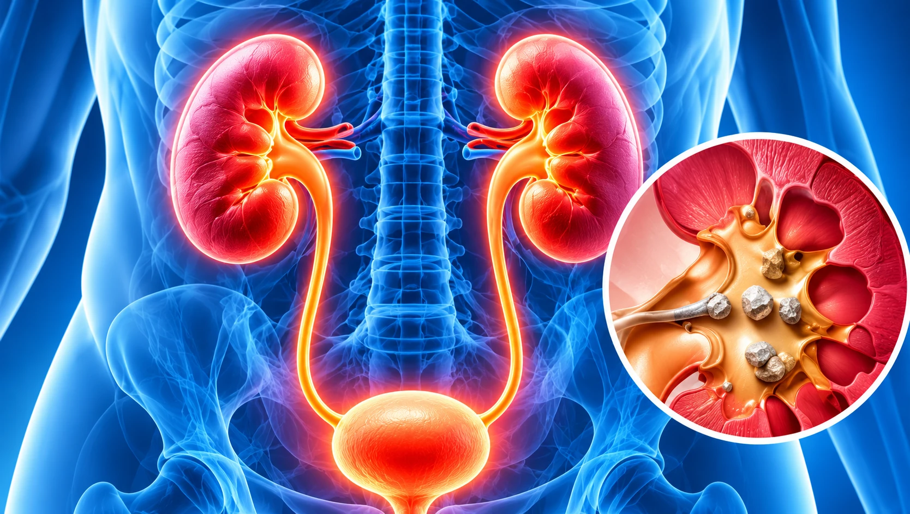
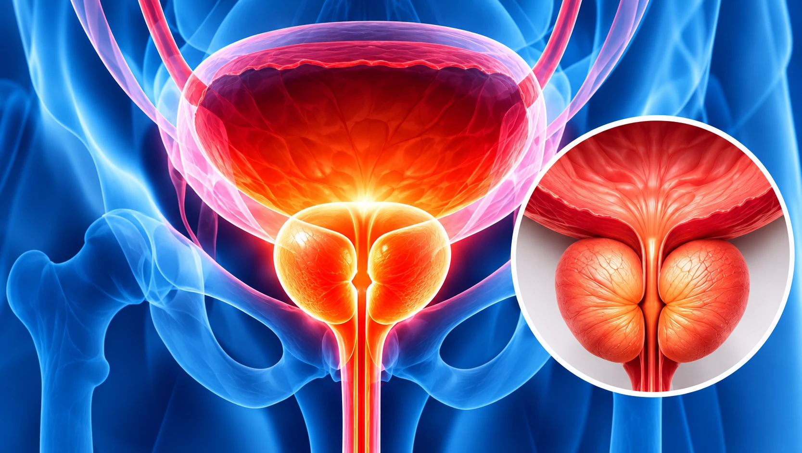
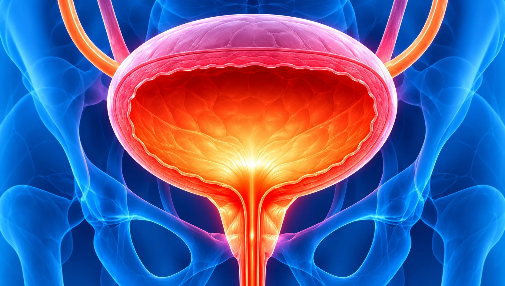
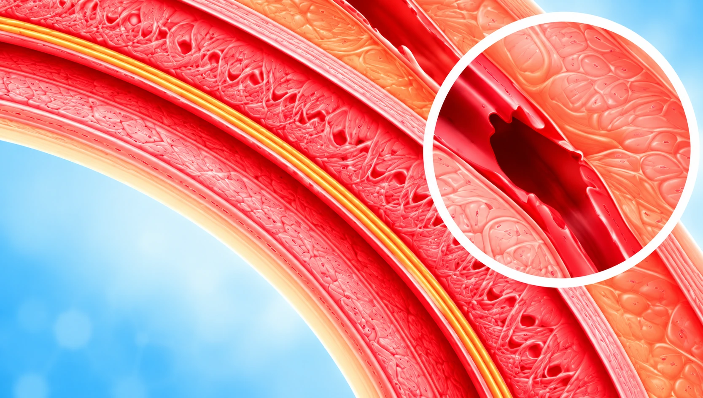
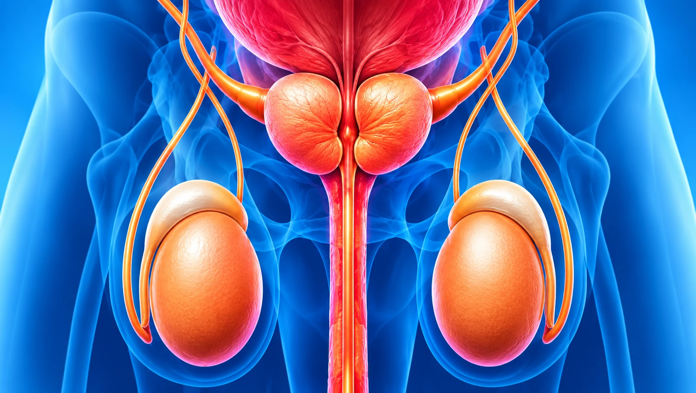

Kidney & Urinary Tract Conditions
- Kidney stones
- Hydronephrosis
- Urinary tract obstruction
- Recurrent kidney problems
Accurate diagnosis and personalised treatment
for a wide range of urological conditions.





Consult our specialists for an accurate diagnosis and personalised care.